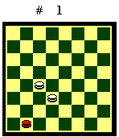
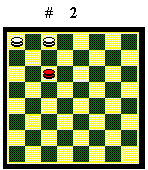
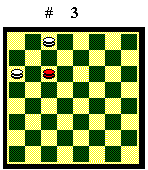
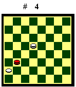
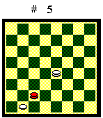
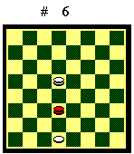
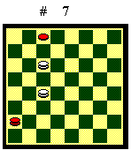
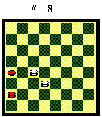
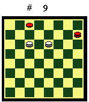
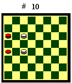

FINALI TEORICI SEMPLICI
In questo articolo riporto i finali
teorici a tre e quattro pezzi, che sono i più semplici da assimilare
e, insieme al finale di tre dame contro due, dovrebbero costituire il bagaglio
di conoscenze minimo di ogni giocatore.
Due dame contro una dama

Se la dama nera non raggiunge un biscacco, viene chiusa a lato. Se riesce a raggiungere un biscacco, il Bianco vince con una semplice manovra.Diagramma 1. Il Bianco muove: 1.18-21 29-25 2.22-18 25-29 3.21-25 29-26 4.25-29 26-30 5.18-14 30-27 6.14-19 27-30 7.19-23 il Bianco vince.
Se muove il Nero la manovra è
la stessa. 
Diagramma 2. Il Bianco muove e patta.

Diagramma 3. Il Bianco muove
e patta.
Una dama e una pedina contro una
dama
Quando in un finale, oltre alle dame, è presente anche una pedina, la casistica diventa piuttosto articolata e l'esito dipende dalla posizione iniziale dei pezzi. Qui ho preso in considerazione solo le posizioni che si presentano più comunemente in gioco vivo, in cui il Bianco ha la pedina su un lato, bloccata dalla dama nera, con le dama bianca più lontana. Il Bianco per vincere deve portare la dama a ridosso della pedina e scortarla fino alla damatura oppure sacrificare la pedina e chiudere la dama nera.

Pedina in 9, 16, 17, 24, 25, 31 o 32Se la dama bianca ha la mossa sulla dama nera, calcolata quando la pedina bianca è ferma a sponda, il Bianco vince. Se invece la dama nera ha la mossa, il finale è pari. Riporto solo il caso di pedina in 25 perché nelle altre posizioni la condotta di gioco è la stessa.
Diagramma 4. Il Nero muove (la dama bianca ha la mossa): 1.21-17 2.14-18 17-21 3.18-22 21-17 4.22-26 17-13 5.25-21 13-18 6.21-17 18-13 7.26-22 13-9 8.22-18 9-5 9.17-13 5-2 (se 5-10, 18-22 Bv per chiusura) 10.13-10 2-6 11.10-5 6-11 12.5-2 il Bianco vince.
Il Bianco muove (la dama nera ha
la mossa): 1.14-19 21-18 2.19-23 18-21 3.23-27 21-18 4.27-30 18-21 5.30-27
il Bianco non può avvicinare la dama alla pedina. Pari.

Pedina in 29Vale la regola opposta: se la dama nera ha la mossa il Bianco vince, se la dama bianca ha la mossa il finale è pari. Nel primo caso infatti basta che il Bianco avanzi la pedina in 25 perché la sua dama guadagni la mossa e si porti in un finale vincente. Nel secondo caso il Bianco, pur arrivando con la dama a ridosso della pedina, non riesce a farla avanzare senza spostarla in 25 e quindi perdere la mossa, sfociando in un finale pari. Riporto solo questa linea di gioco.
Diagramma 5. Il Nero muove
(la dama bianca ha la mossa): 1.26-30 2.19-22 30-26 3.22-18 26-30 4.18-21
30-27 5.21-26 (se 29-25, 27-22 pari) 27-30 6.26-22 il Bianco non può
avanzare la pedina. Pari.

Pedina in 30Il Bianco vince in ogni caso: se la sua dama ha la mossa la condotta di gioco ricalca quelle già viste; se non ha la mossa, sacrifica la pedina per guadagnare la mossa e chiude la dama nera. Riporto solo questa linea di gioco.
Diagramma 6. Il Bianco muove
(la dama nera ha la mossa): 1.14-10 22-26 (se 22-27 la pedina fugge sulla
sponda sinistra, invertendo la mossa fra le dame e Bv) 2.30-27 26-22 3.27-23
22-19 4.10-6 (il momento giusto per lasciare in presa la pedina) 19x28
5.6-11 28-23 6.11-15 il Bianco vince.
Due dame contro una dama e una pedina
(Prima Posizione)
Questo finale è il più semplice a parità di pezzi e vantaggio di qualità (una dama del Bianco contro una pedina del Nero) ed è il punto di riferimento dei finali a vantaggio di qualità più complessi. Ho preso in considerazione solo le posizioni che si presentano più comunemente in gioco vivo, in cui il Nero ha la pedina a lato, bloccata dalle dame bianche. Se il Nero non riesce a portare la dama in un biscacco perde (eccetto il caso del Diagramma 10) perché il Bianco con una dama blocca la pedina e con l'altra chiude la dama nera. Se la dama nera raggiunge il biscacco superiore il finale è pari (eccetto il caso del Diagramma 9).
Se la dama nera è nel biscacco inferiore:
|
|
|
|

Pedina in 1, 2, o 9Diagramma 7. Il Nero muove (il Bianco ha la mossa): 1.25-29 2.10-14 29-26 3.14-19 26-29 4.19-22 29-25 5.22-26 25-29 6.18-22 2-5 (se la pedina fosse in 3 o sulla sponda destra potrebbe avanzare fino a dama) (A) 7.26-21 29-25 8.22-18 25-29 9.18-13 29-25 10.21-18 5-9 11.18-21 25x18 12.13x22 9-13 13.22-18 il Bianco vince.
(A) - 6.29-25 7.26-29 25-21 8.29-25 21-17 9.22-19 2-5 10.19-14 17-13 (A1) 11.25-29 13-10 12.14-11 5-9 13.29-26 9-13 14.26-21 13-17 15.21-26 10-13 16.11-14 13-9 17.14-18 9-5 18.26-22 5-2 19.22-19 2-5 20.19-14 5-9 21.14-10 il Bianco vince.
(A1) - 10.5-9 11.14-10.9-13 12.25-29 13-18 13.10-14 18-21.14.29-25 (se 14-18?, 21-25 pari) 21-26 15.25-29 26-30 16.14-18 30-27.17.18-21 il Bianco vince.
Il Bianco muove (il Nero ha la mossa): 1.10-14 25-29 2.18-21 29-25 3.14-18 2-5 4.21-17 5-9 5.17-13 (se 17-21, 9-13 Nv) 25-29 6.18-22 29-25 7.13-18 25-29 8.18-21 29-25 9.21-17 il Bianco non può scacciare la dama nera dal biscacco. Pari.
Se la pedina è in 1 o 9, le
linee di gioco sono le stesse.

Pedina in 17Diagramma 8. Il Bianco muove (e ha la mossa): 1.22-26 25-29 2.18-22 29-25 3.26-29 25-21 4.29-25 il Bianco vince.
Il Nero muove (e ha la mossa): 1.25-29
2.18-21 29-25 3.22-18 25-29 4.18-22 (se 21-25, 17-21 il Nero dama la pedina
e patta) 29-25 il Bianco non può scacciare la dama nera dal biscacco.
Pari.

L'unico caso in cui il Nero con una dama nel biscacco superiore perde è quello del Diagramma 9. Il Bianco muove (e ha la mossa): 1.11-7 8-4 2.10-6 Bv. Se invece il Nero ha la mossa, il Bianco non riesce a dare il cambio e patta.
L'unico caso in cui il Nero, se ha
la mossa in favore, patta con la dama fuori dai biscacchi è quello
del Diagramma 10. Il Bianco non può chiudere i pezzi neri
perché non ha la mossa. Per vincere dovrebbe forzare un cambio,
ma sarebbe costretto a manovrare dall'alto con entrambe le dame, lasciando
libera la pedina.